A3: 3D Printed Object
November 1, 2021
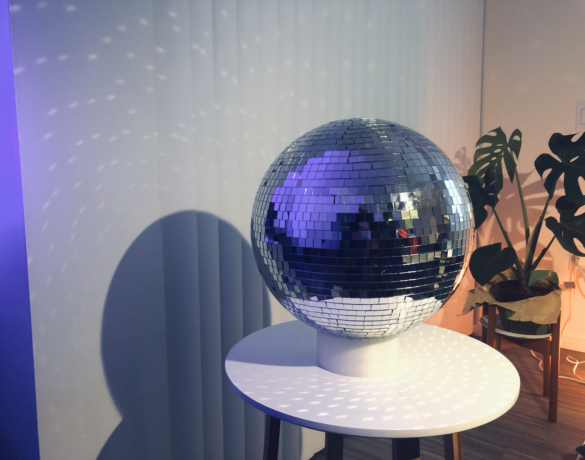The Goal
Design and build something that would be useful in your everyday life using 3D modeling and printing. The design must include the following primitive operations:
- Extrusion
- Revolution
- Boolean
Design
A few weeks ago, I was gifted a lovely disco ball from a friend! Unfortunately, the disco ball is too heavy for me to install on the ceiling without any screws. The disco ball has mostly been living on my couch and rolling around on the floor. This assignment became my opportunity to design a 3D-printed stand to hold the disco ball in place! These are a few of the key design considerations that I kept in mind:
- The stand should fit nicely on a side table or coffee table. It shouldn't be wider
than 5 inches in diameter.
- The disco ball has a hook for hanging at one end. While displaying, I want the stand
to keep the hook hidden.
- The stand should be minimal in design to not distract from the disco ball.
- The stand should ideally serve another purpose while not in use.
Since this model would be constrained by time to print and my own abilities to 3D model the design, it had to be minimal and feasible. I decided to go with a cylindrical stand shape with cutouts fit the disco ball and its hook. When not in use, the stand could act as a small tray for hair ties/clips. It can even act as a large coaster. I went on to sketching and took a few measurements to ensure the stand would fit the disco ball.

The overall design is similar to that of a small bowl, however the top edges of the stand have been cut to accommodate the curvature of the disco ball. This allows the ball to sit nicely on top of the stand. I also ensured that there was enough cutout space for the hook so that I wouldn't have to fumble with it everytime I placed the ball on the stand.
To make the CAD process faster, I wrote down all the steps I would take before any modeling. Taking this step allowed me to verify that I've hit all three primitive operations.
Modeling in SolidWorks
I modeled the part in SolidWorks! I used revolution to create the walls of the stand, extruded the base of the stand to make it into a bowl, and booleandifferenced/extrude cut the top edge of the stand to match the curvature of the disco ball. Here are some images from throughout the CAD process:
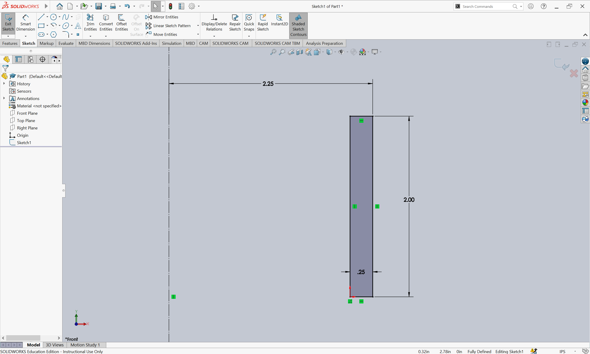 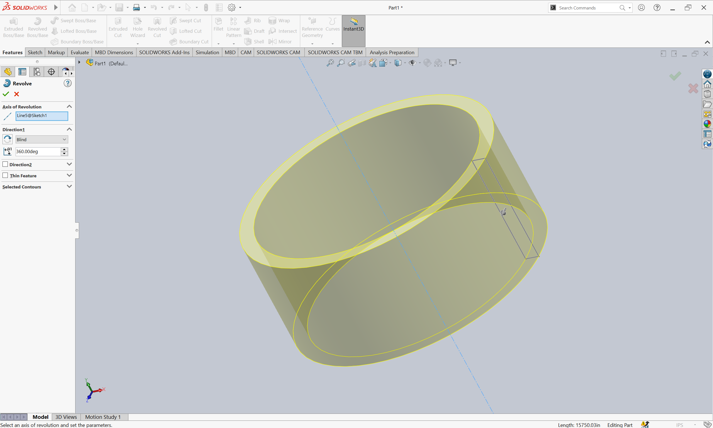 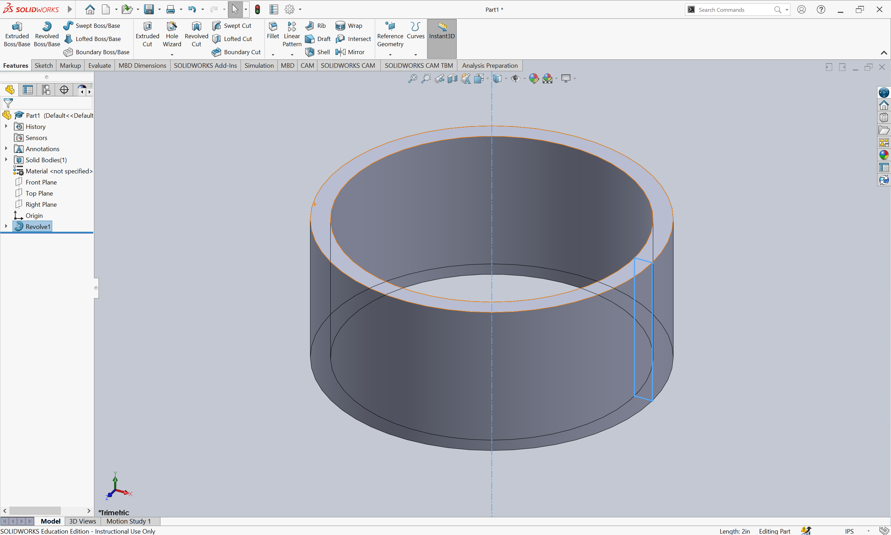 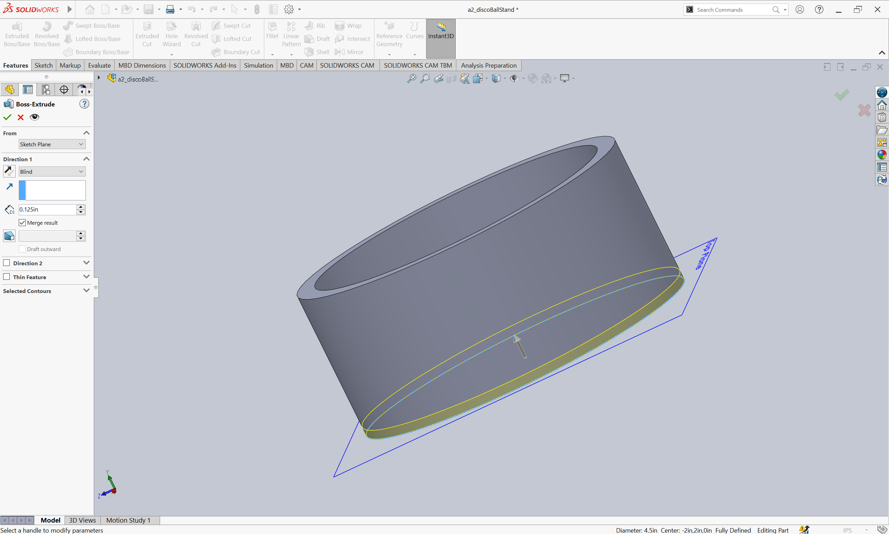 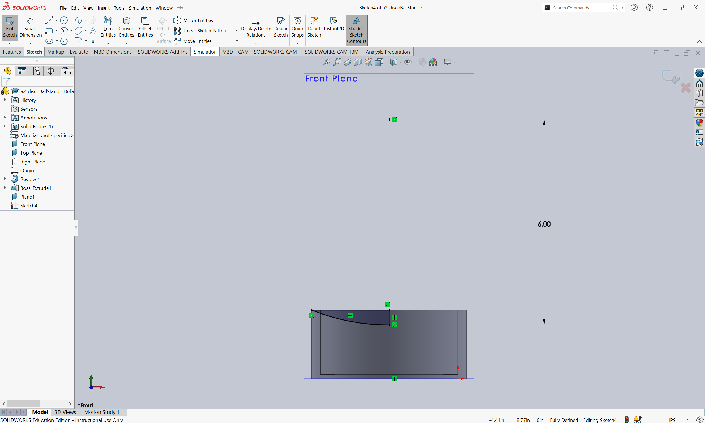 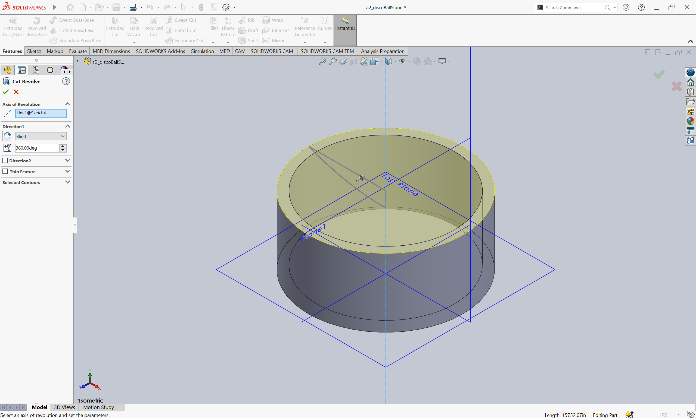 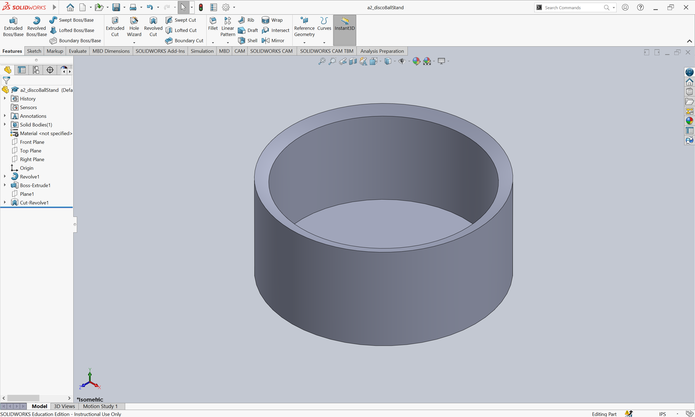Prototype
I then 3D printed the stand (4hr18min)!
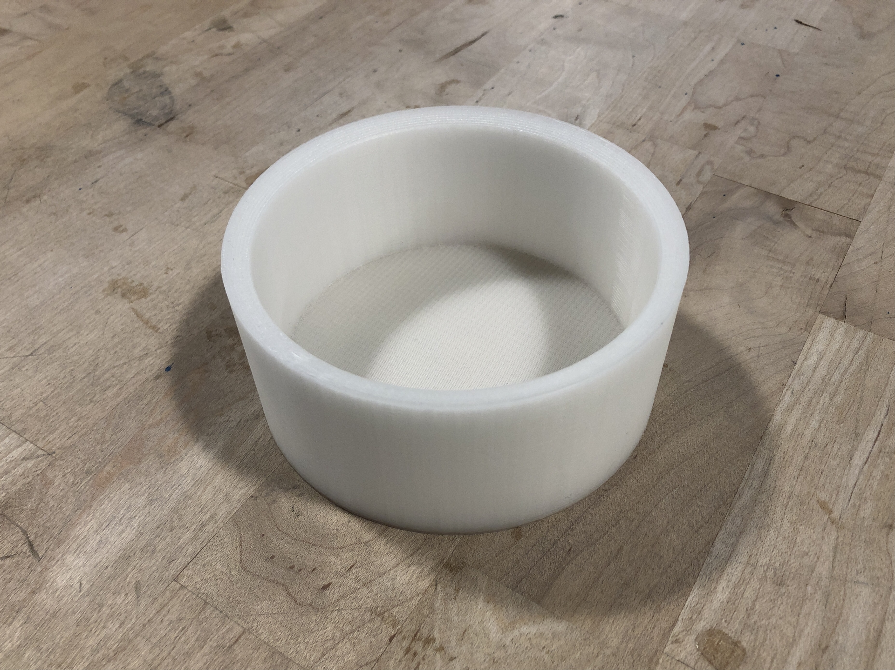Here's a picture of the prototype with the disco ball!
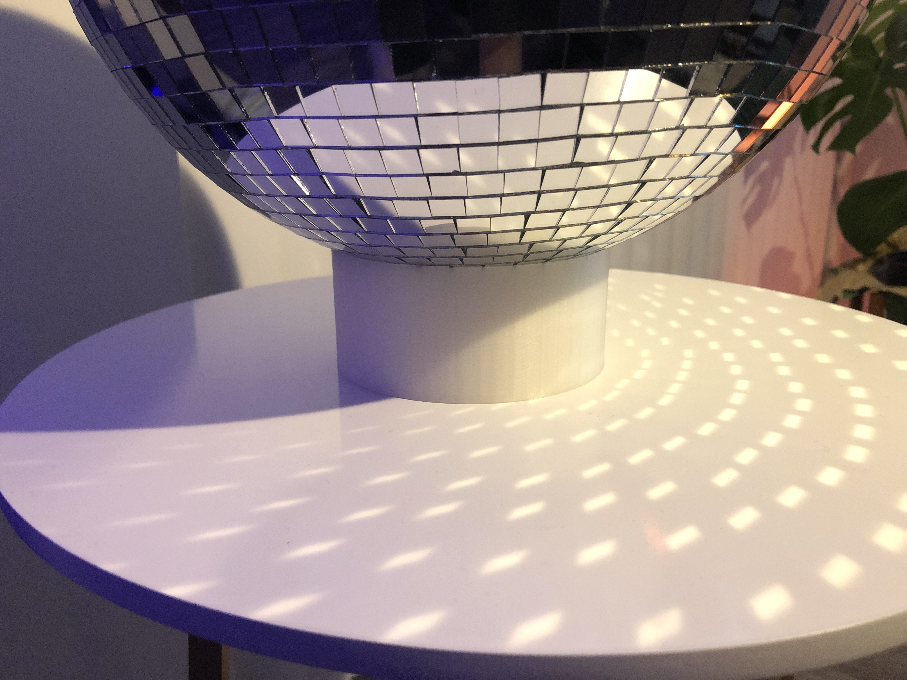 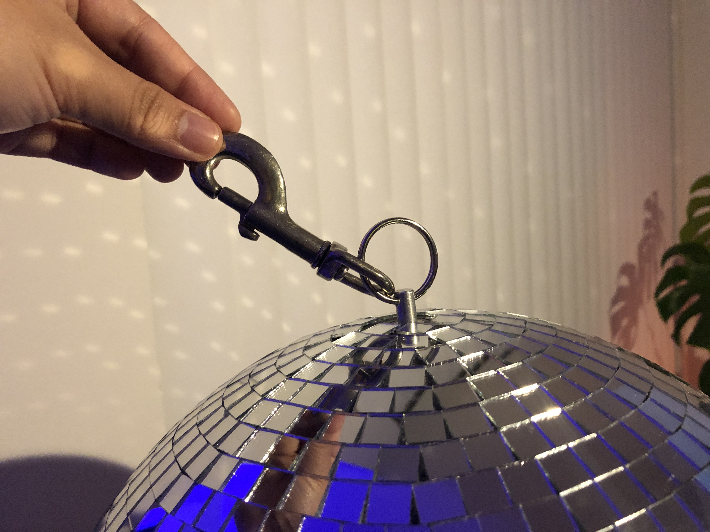 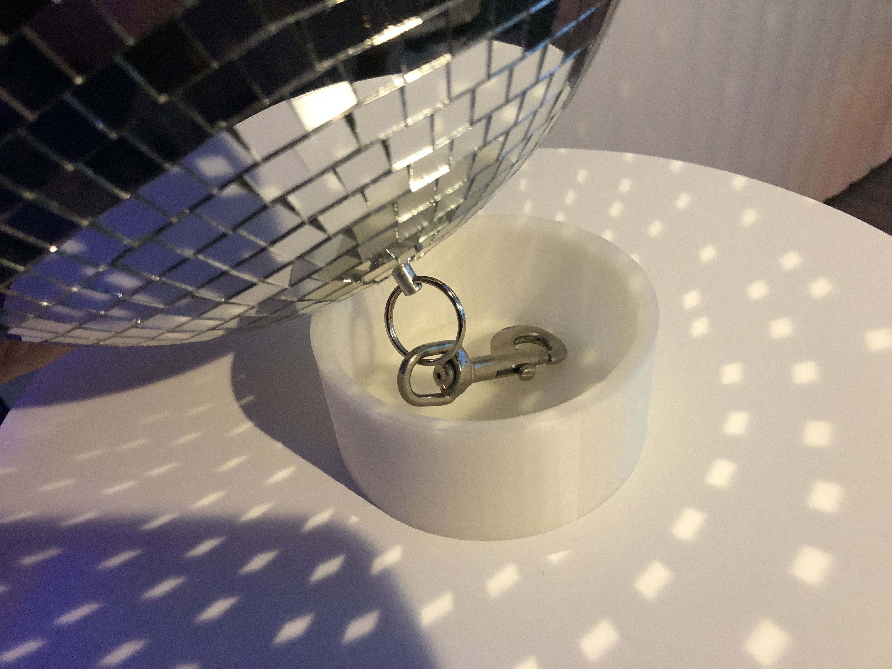User Test
I conducted one user test with my final prototype where I asked the user to place the disco ball on the stand and comment on their thoughts about the experience and overall 3D model. During my user test, I tested for overall usability, feasibility, and desirability.
Usability
- I had the user place the disco ball on the stand.
- I observed how well the disco ball stayed on the stand, checking for sturdiness, if it was prone to fall over, etc.
Feasibility
- The user placed the disco ball on the stand again, but this time they hid the hook in the stand.
- I observed how long this task took to complete and looked for potential pain points (Is the cutout large enough to accommodate
the hook without having the fumble with it?)
Desirability
- During and after the user test, I asked the user what they thought about the disco ball stand and how they would improve it to
be more desirable.
- These responses helped me think of future iterations of this design.
Analysis
User Test Feedback:
- The bottom of the 3D model is too smooth and slides around too easily. The stand and disco ball
could potentially slide off the table if pushed accidentally.
- The stand serves its purpose, it's easy to use, and the user likes it!
- Besides the (potentially slippery) bottom, the stand is sturdy and holds up the disco ball.
- In future iterations, the user thinks it would be cool if the stand could spin the disco ball.
Critique Feedback:
- In Progress (Critique on 11/2/21)
What Worked Well:
- The stand printed with no issues and didn't require supports. Printed in 4 hours 18 minutes on a Dremel 3D45.
- The stand successfully holds up/displays the disco ball while hiding the hook.
What Needed Improvement:
- The bottom of the model is too smooth, making it more likely to slide off a table if pushed. To fix this, I could
add rubber feet to the bottom of the model or the 3D model could be modified to accommodate the addition of adhesive
rubber feet (so it looks more flush with the table surface).
- The user suggested that I make the stand spin in the future! I agree! In a future iteration, I'd like to redesign the 3D model
stand to consider the addition of a motor.
Key Findings:
- The bottom of the model needs to be modified so it's less slippery!
- Users were pleased with how the stand fulfilled its purpose.
Do you have a 12" disco ball that needs a stand? I've uploaded my part, STL, and gcode (for Dremel 3D45) files onto my GitHub! SolidWorks Part File STL File GCode, Sliced for Dremel 3D45